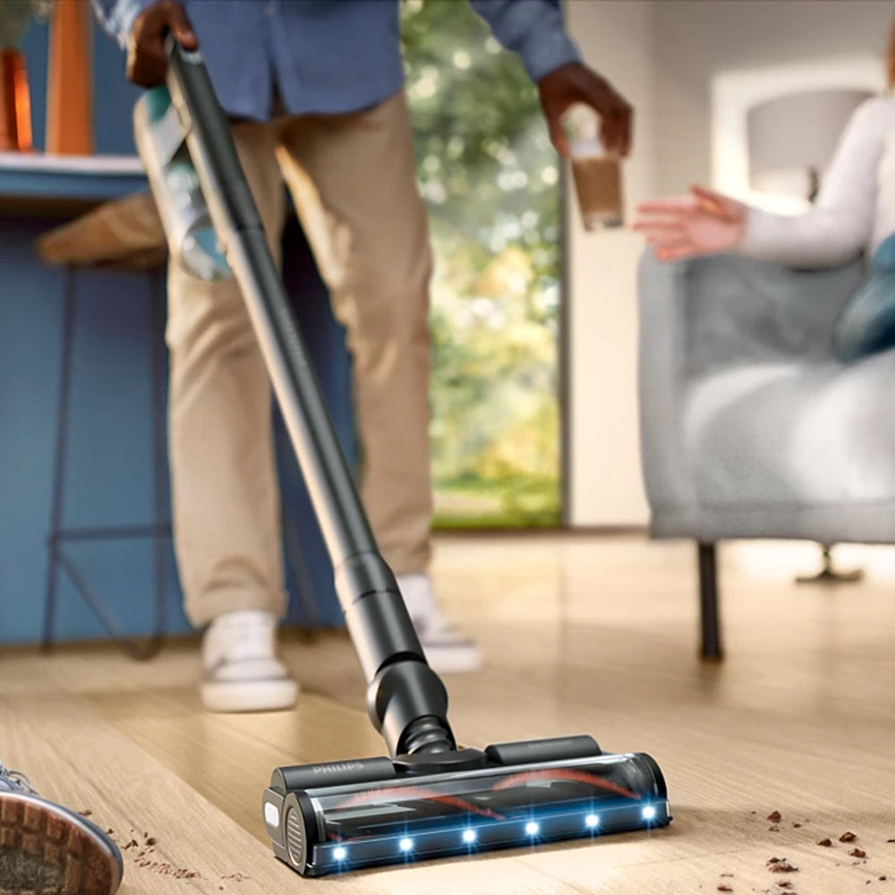
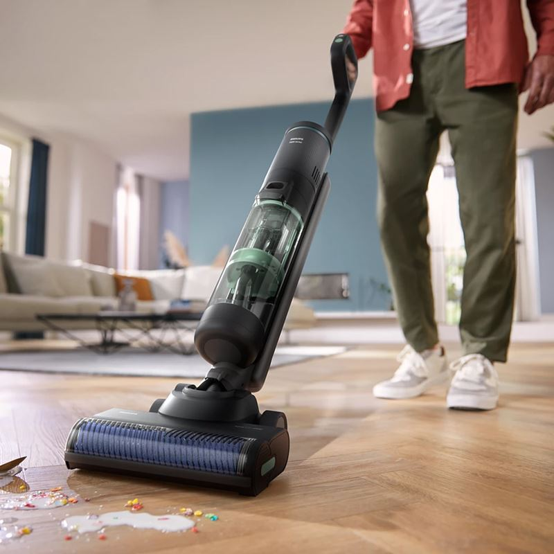
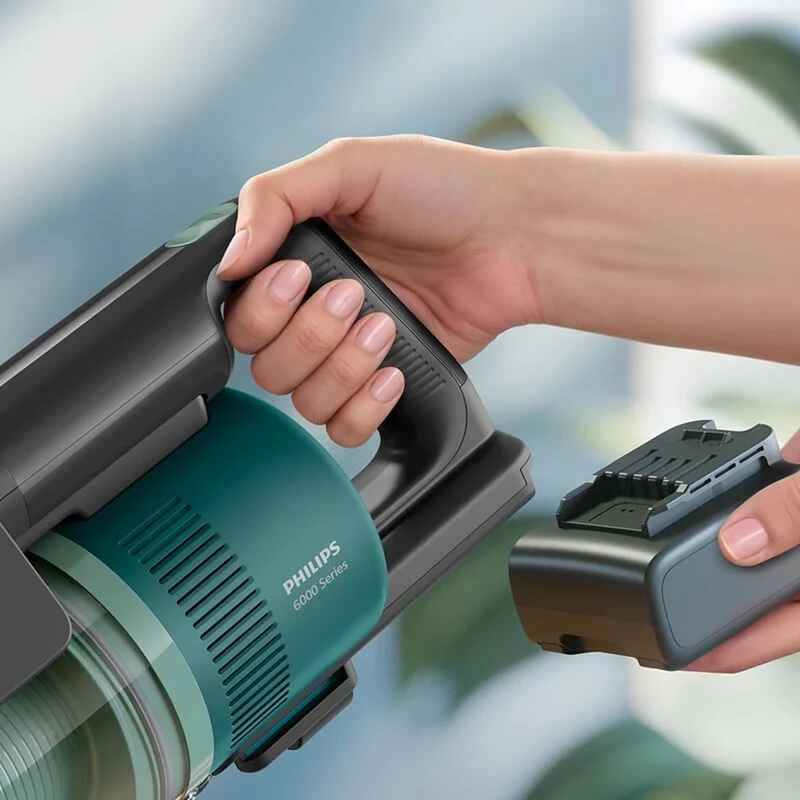
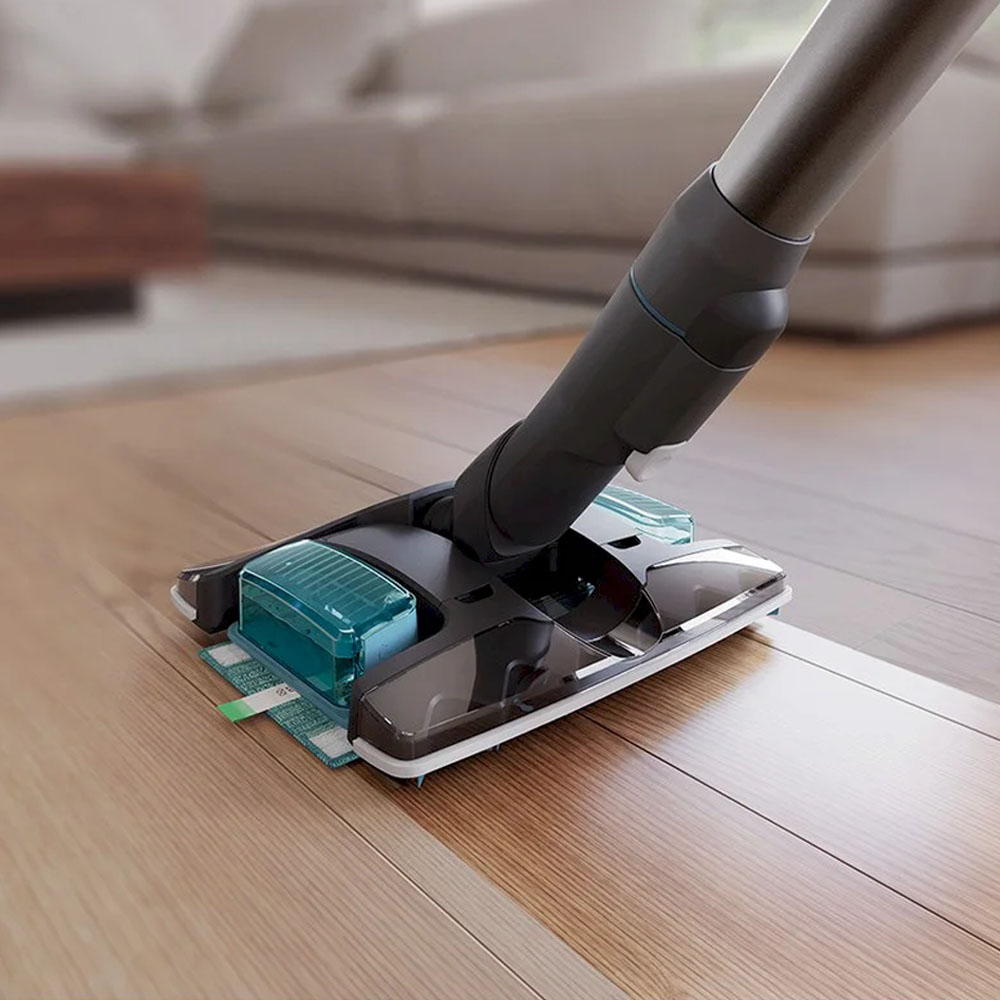
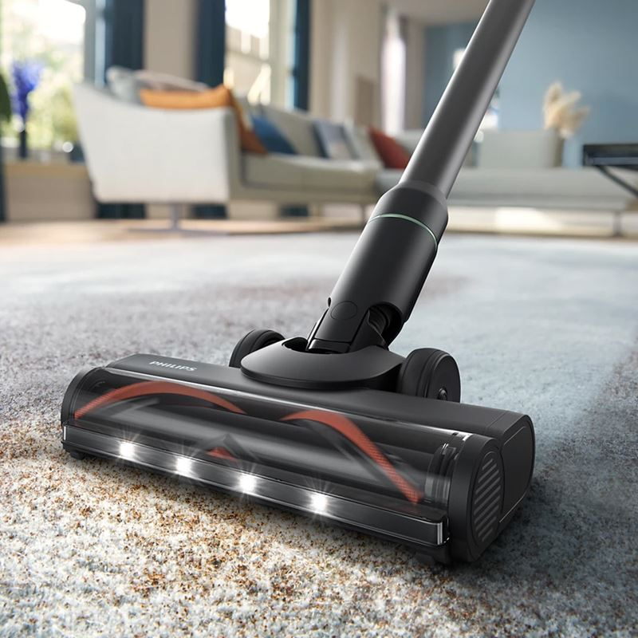

Ev temizliği söz konusu olduğunda güvenilir, güçlü ve uzun ömürlü bir süpürge seçmek temizlik konforunuzu doğrudan etkiler. Philips süpürge seçenekleri, hem teknolojisi hem de kullanıcı odaklı tasarımlarıyla ev işlerinde size yardımcı olur.
Günlük temizlik rutininizi hızlandırmak, daha hijyenik bir yaşam alanı oluşturmak ve minimum eforla maksimum performans almak için doğru süpürge tercihi önemli rol oynar. Philips’in süpürge modelleri arasında temizlik rutininize ve evinizin boyutuna, oda sayısına ve eşyalarınıza göre bir seçim yapabilirsiniz.
Kendi ihtiyaçlarınızı netleştirmek için temizlik sıklığınızı, yaşam alanınızdaki zemin tiplerini ve beklentilerinizi gözden geçirmeniz süreci kolaylaştırır. Böylece hem uzun vadede memnun kalacağınız hem de pratik kullanım sunan bir modele yönelmeniz mümkün olur. Doğru süpürge seçimi, evinizdeki genel temizlik kalitesini artırırken harcadığınız zamanı da önemli ölçüde azaltır.
Ürün seçimine karar veremiyorsanız Philips’in sektördeki konumunu, farklı model seçeneklerini, filtre sistemlerini ve kullanıcı deneyimlerini detaylı biçimde inceleyerek fikir edinebilirsiniz.

Philips elektrikli süpürge kategorisi, markanın uzun yıllara dayanan global güvenilirliği ve yenilikçi yaklaşımı sayesinde dünya çapında yüksek memnuniyet oranına sahip. Philips, elektrikli süpürge teknolojilerinde sektör standartlarını belirleyen markalardan biri olarak tanınır.
Philips’in avantajları arasında özellikle yüksek emme gücü, enerji tasarruflu motor yapısı, dayanıklılık ve kolay bakım sunan tasarımlar bulunur. Birçok modelde kullanılan PowerCyclone teknolojisi, havayla tozu hızlı şekilde ayrıştırarak daha verimli bir temizlik sağlar. Bunun yanında TriActive başlık, tek geçişte daha geniş alanı temizlemenize yardımcı olur.
Kullanıcıların Philips’i tercih etmesinin başlıca sebepleri şöyle sıralanabilir:
Sahip olduğu özelliklerle Philips süpürge gamı, güvenilir performans arayan kullanıcılar için sıkça önerilir.

Philips’in ürün gamı oldukça geniştir ve farklı kullanım şekillerine göre size uygun modeli bulabilirsiniz. Philips toz torbalı süpürge seçenekleri, özellikle hijyen beklentisi yüksek kullanıcıların ilk tercihi olur. Torbaların tek seferde çıkarılıp atılması hem kolaylık hem de daha hijyenik bir boşaltma süreci sunar. Ayrıca Philips toz torbalı süpürge modellerinde gelişmiş HEPA filtre sistemi sık görülür. Böylece alerjik bünyeler için alerji dostu temizlik mümkün olur.
Torbasız modellerde yine PowerCyclone teknolojisi ile güçlü hava akımı sağlanır. Süpürgeler toz haznesinin kolay boşaltılması sayesinde kolay bakım sunar. Maliyet olarak da torba gerektirmediği için avantajlı olabilir.
Kesintisiz güç isteyen kullanıcılar için Philips kablolu süpürge modelleri, uzun kablo boyları ve yüksek watt değerleriyle öne çıkar. Modeller geniş alanlarda verimli kullanım sunar.
Philips elektrikli süpürge modellerinde diğer öne çıkan teknolojiler şöyledir:
Çeşitlilik sayesinde Philips elektrikli süpürge kategorisinde ihtiyaçlarınıza en uygun modeli kolayca bulabilirsiniz.

Doğru süpürge seçimi yaşam alanınız ve kullanım alışkanlıklarınıza göre değişir. Farklı senaryolara göre kullanım şekilleri de değişiklik gösterebilir. Küçük evler için kompakt gövdeye sahip Philips süpürge modelleri, dar alanlarda rahat manevra yapmanızı kolaylaştırır. Hafif yapıları sayesinde günlük temizlik için ideal seçenek olabilir.
Kullanım sıklığına göre günlük yoğun temizlik yapanlar için dayanıklı gövdeli, yüksek motor performanslı modeller ideal olabilir. Haftalık temizlik yapanlar için standart güç seviyesine sahip ekonomik seçenekler değerlendirilebilir. Kendi temizlik rutitinize uygun seçeneği belirledikten sonra ev temizliğini daha kolay ve hızlı şekilde gerçekleştirebilir, aynı zamanda daha efektif sonuçlar alabilirsiniz.
Büyük evler için geniş toz haznesi ve uzun kablosu bulunan modeller daha konforlu kullanım sağlayabilir. Yüksek motor gücü büyük metrekarelerde zaman kazandırır. Evcil hayvan besliyorsanız tüy toplama kapasitesi yüksek pet hair süpürge başlıklarına sahip modeller tercih edebilirsiniz. Böylece zeminde, eşyalarda ve mobilyalarda biriken tüyleri hızlı ve kolay bir şekilde temizleyebilirsiniz. Mini turbo fırça kategoride en çok önerilen aksesuarlar arasında bulunur. Benzer şekilde alerjisi olanlar için HEPA filtre sistemi bulunan modeller, ince partikülleri hapsederek daha sağlıklı bir ortam oluşturur. Evdeki toz oranının büyük ölçüde azalması, toz alerjisinin kontrol altına alınmasına katkıda bulunur.
Zemin tipine göre parke ve laminat için yumuşak kıllı başlıklar, halı için daha güçlü emişli başlıklar seçilebilir. Zemine uygun başlık seçimi yapmak yüzeyde biriken kir ve tozları en iyi şekilde temizlemek açısından faydalı olur. Çok sayıdaki seçenek arasından Philips süpürge modelleri size en uygun performansı sunan özellikleriyle temizlik rutinini zahmetsiz hâle getirir.

Her süpürgenin performansı, filtre sistemiyle doğru orantılı olur. Bu noktada Philips süpürge filtresi çeşitleri HEPA filtre, EPA filtre ve Yıkanabilir filtre seçenekleriyle her kullanım ihtiyacına yanıt verir. Her filtre kendi model grubuna özel tasarlandığı için uyumluluğa dikkat etmek gerekir.
Orijinal filtre kullanmak hem yüksek performans sağlar hem de cihazın uzun ömürlü kullanım göstermesine destek olur. Filtre değişim önerileri HEPA filtre için 6–12 ay, yıkanabilir filtreler için belirli aralıklarla suyla temizleme şeklindedir.
Aksesuar tarafında da Philips aşağıda inceleyeceğiniz şekilde, oldukça zengin bir içerik sunar

Piyasada giriş, orta ve üst segmentte birçok Philips modeli bulunur. Philips süpürge fiyatları, modelin motor gücü, filtre teknolojisi ve aksesuar çeşitliliğine göre değişiklik gösterir. Bütçenize göre doğru modeli belirlerken kullanım sıklığı, evin büyüklüğü ve zemin tipini göz önünde bulundurabilirsiniz. Kullanıcı yorumları incelendiğinde Philips süpürge makinesi modellerinin özellikle şu alanlarda yüksek puan aldığı görülür:
Rutin bakım önerileri de oldukça basit. Filtrelerin düzenli temizlenmesi, toz haznesinin veya torbanın zamanında değiştirilmesi ve fırçaların periyodik bakımının yapılması cihazın performansını artırır. Philips alışverişini Jebinde ile yapmanın birçok avantajları var. Philips’in resmi satıcısı Jebinde, %100 orijinal ürün garantisi sunar. Orijinal filtre ve aksesuar temini ile süpürgenin kalitesinden ödün vermeden temizlik yapabilirsiniz.
Jebinde’de 75+ kişilik uzman ekip desteği bulunuyor. İhtiyaç duyduğunuz noktada tüm sorularınız için uzman ekiple görüşerek destek alabilirsiniz. Hızlı ve güvenilir teslimat imkânı ürünü kolayca teslima almanızı mümkün kılıyor. Ek olarak iade etmek isterseniz kolay iade süreçleriyle kullanıcıya yardımcı olunuyor. Görüntülü görüşme hizmeti ve Profesyonel müşteri desteği sayesinde Jebinde ile güvenli alışverişin tadını çıkarabilirsiniz.
Bütün avantajları sayesinde Philips süpürge makinesi veya aksesuar alışverişinizi güvenle gerçekleştirebilirsiniz. Aynı şekilde yedek filtre ve bakım parçalarında da Philips filtre seçeneklerine kolayca ulaşabilirsiniz.